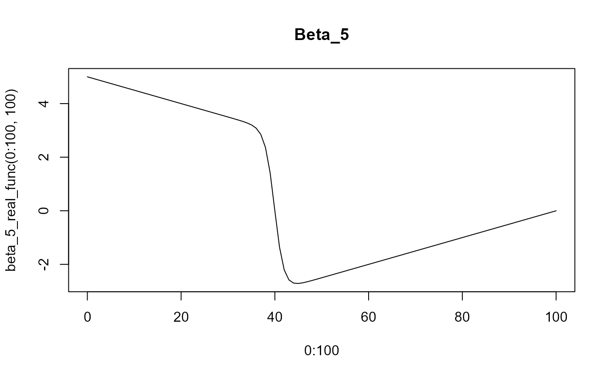

Triangular function with angle at (x=drop, y=drop) with slope of 1 and -1
Examples
beta_5_real_func(0)
#> [1] 5
beta_5_real_func(10)
#> [1] 4.5
beta_5_real_func(10:90)
#> [1] 4.500000 4.450000 4.400000 4.350000 4.300000 4.250000 4.200000
#> [8] 4.150000 4.100000 4.050000 4.000000 3.950000 3.900000 3.850000
#> [15] 3.799999 3.749998 3.699994 3.649983 3.599956 3.549881 3.499682
#> [22] 3.449149 3.397720 3.343896 3.283681 3.206496 3.084888 2.851217
#> [29] 2.360942 1.409457 0.000000 -1.363246 -2.208623 -2.579673 -2.699277
#> [36] -2.713189 -2.686648 -2.645171 -2.598256 -2.549371 -2.499773 -2.449918
#> [43] -2.399971 -2.349989 -2.299996 -2.249999 -2.200000 -2.150000 -2.100000
#> [50] -2.050000 -2.000000 -1.950000 -1.900000 -1.850000 -1.800000 -1.750000
#> [57] -1.700000 -1.650000 -1.600000 -1.550000 -1.500000 -1.450000 -1.400000
#> [64] -1.350000 -1.300000 -1.250000 -1.200000 -1.150000 -1.100000 -1.050000
#> [71] -1.000000 -0.950000 -0.900000 -0.850000 -0.800000 -0.750000 -0.700000
#> [78] -0.650000 -0.600000 -0.550000 -0.500000
plot(x=0:100, y=beta_5_real_func(0:100, 100), type='l', main="Beta_5")
